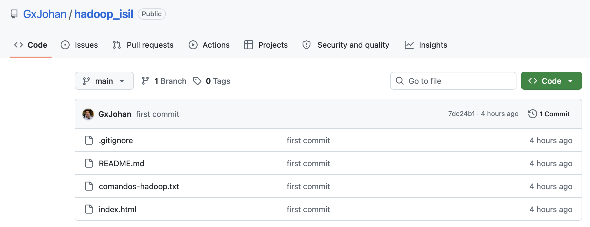

Repositorio del curso en GitHub

Lo que se ve: el repositorio GxJohan/hadoop_isil en GitHub. Es lo que descargas con git clone.
Curso de Big Data - ISIL
Guía paso a paso, desde cero, para levantar Hadoop con Docker dentro del repositorio del curso, subir un archivo CSV de 200 MB a HDFS y comprobarlo en el navegador.
datos_200mb.csv dentro de la carpeta
/data de HDFS en http://localhost:9870.
Haz los pasos en orden y no avances hasta cumplir el
"Debes ver" de cada paso.
cd docker-hadoop y docker compose up -d en otra carpeta.
Ahora haremos lo mismo, pero dentro del repositorio del curso hadoop_isil,
y además subiremos el archivo de 200 MB.
Cada paso de esta guía tiene una etiqueta de color que te dice dónde se ejecuta. La mayoría de errores vienen de escribir un comando en el lugar equivocado. Mira el inicio de la línea (prompt) para saber dónde estás.
Windows: la terminal de Ubuntu (WSL) o la terminal de VS Code conectada a WSL.
Mac: la app Terminal o la terminal de VS Code.
Aquí se usan los comandos git, cd, ls y docker.
alumno@pc:~/hadoop_isil$
Entras con docker exec -it namenode bash y sales con exit.
Aquí se usan los comandos hdfs dfs. Aquí no funciona docker.
root@a1b2c3d4e5f6:/#
Chrome, Edge, Firefox o Safari.
Aquí solo miras el resultado en http://localhost:9870. No se escribe ningún comando.
datos_200mb.csvdatos_200mb.csv no viene dentro del repositorio, porque GitHub no acepta archivos
de más de 100 MB. Lo descargas tú en el paso 4.
ai_student_impact_dataset.csv. Es para la Semana 7.
Hoy no lo uses.
El mismo archivo hace dos viajes. No son dos archivos distintos: es uno solo que avanza por etapas.
hadoop_isil
/tmp
/data
localhost:9870
Antes de todo, confirmamos que Docker responde. Si Docker no funciona, nada de lo demás funcionará.
docker --version
docker compose version
docker psDocker version ...Docker Compose version ...CONTAINER ID IMAGE ... (puede estar vacía o tener contenedores de la clase: ambas cosas están bien).docker: command not found:
abre Docker Desktop → Settings → Resources → WSL integration,
activa Ubuntu, presiona Apply & restart, cierra Ubuntu y vuelve a abrirlo.
La carpeta hadoop_isil será tu carpeta de trabajo. Todo lo de hoy ocurre dentro de ella.
Repositorio: https://github.com/GxJohan/hadoop_isil
cd ~
git clone https://github.com/GxJohan/hadoop_isil.git
cd hadoop_isil
code .| Comando | Qué hace |
|---|---|
cd ~ | Te lleva a tu carpeta personal, para que todos empecemos en el mismo lugar. |
git clone ... | Descarga el repositorio del curso y crea la carpeta hadoop_isil. |
cd hadoop_isil | Entra a la carpeta del curso. |
code . | Abre esta carpeta en Visual Studio Code. |
hadoop_isil antes?
Si git clone dice already exists, no pasa nada: ejecuta cd ~/hadoop_isil,
luego git pull y continúa con code .
WSL: Ubuntu.code . no funciona: abre VS Code manualmente y usa File → Open Folder para abrir hadoop_isil.
Desde ahora puedes usar la terminal de VS Code: menú Terminal → New Terminal.
Esa terminal ya empieza dentro de hadoop_isil.
HADOOP_ISIL en el panel izquierdo
(con archivos como index.html y README.md).

Lo que se ve: el repositorio GxJohan/hadoop_isil en GitHub. Es lo que descargas con git clone.
docker-hadoop contiene la configuración que Docker usa para crear Hadoop.
Debe quedar dentro de hadoop_isil.
pwd: el resultado debe terminar en /hadoop_isil.
Si no, ejecuta cd ~/hadoop_isil.
git clone https://github.com/big-data-europe/docker-hadoop.git
lsls aparece la carpeta docker-hadoop. También la verás en el panel izquierdo de VS Code.
already exists: ya la tenías descargada. Continúa con el paso 4.
Este es el archivo "pesado" que vamos a guardar en Hadoop. Debe quedar en la carpeta raíz
hadoop_isil y llamarse exactamente datos_200mb.csv.
HADOOP_ISIL (no dentro de docker-hadoop).
datos_200mb.csv y presiona Enter.
ls -lh200M y el nombre datos_200mb.csv, junto a la carpeta docker-hadoop.
drwxr-xr-x ... docker-hadoop
-rw-r--r-- ... 200M datos_200mb.csv
...hadoop_isil, ejecuta explorer.exe . Se abrirá la carpeta en el Explorador de Windows: arrastra ahí el archivo.hadoop_isil en Finder y arrastra ahí el archivo.datos_200mb.csv.
hadoop_isil/
├── docker-hadoop/ ← paso 3
├── datos_200mb.csv ← paso 4 (200 MB)
├── images/
├── index.html
├── README.md
└── ... ← otros archivos del curso, no los toquesEsto es lo mismo que hicimos en clase. Docker crea los contenedores de Hadoop (namenode, datanode, etc.). La primera vez puede tardar varios minutos.
cd docker-hadoop
docker compose up -d
docker psdocker ps, estos nombres con estado Up:
namenode, datanode, resourcemanager, nodemanager, historyserver.
En Docker Desktop verás el grupo docker-hadoop con puntos verdes.
AMD64 en Docker Desktop: no es un error.

Lo que se ve: el grupo docker-hadoop con namenode, datanode,
nodemanager e historyserver en verde. Si ves los puntos verdes, Hadoop está corriendo.
Antes de subir el archivo, confirmamos que Hadoop responde.
http://localhost:9870Overview 'namenode:9000' (active).
docker ps.

Lo que se ve: la pantalla Overview de Hadoop en localhost:9870.
Si esta página abre, el NameNode está funcionando.
Primer viaje del archivo: de tu PC a la carpeta /tmp del contenedor namenode.
Volvemos a hadoop_isil porque ahí está el CSV.
cd ..
docker cp datos_200mb.csv namenode:/tmp/datos_200mb.csv
docker exec namenode ls -lh /tmp/datos_200mb.csv| Comando | Qué hace |
|---|---|
cd .. | Sale de docker-hadoop y vuelve a hadoop_isil, donde está el CSV. |
docker cp ... | Copia el CSV desde tu PC hacia /tmp dentro del contenedor namenode. |
docker exec ... ls -lh ... | Revisa, sin entrar al contenedor, que el archivo ya llegó. |
Successfully copied ... (depende de tu versión de Docker) y luego una línea que termina en
/tmp/datos_200mb.csv con tamaño 200M o 201M (ambos están bien).
no such file or directory: no estás en la carpeta hadoop_isil
o el archivo no se llama exactamente datos_200mb.csv. Ejecuta cd ~/hadoop_isil,
luego ls -lh, corrige el nombre si hace falta (paso 4) y repite este paso.
Los comandos de HDFS se escriben dentro del contenedor. Este comando te mete en él.
docker exec -it namenode bashroot@a1b2c3d4e5f6:/#.
docker no funcionan.
Segundo viaje del archivo: de /tmp del contenedor al sistema de archivos de Hadoop (HDFS),
en la carpeta /data.
hdfs dfsadmin -safemode wait
hdfs dfs -mkdir -p /data
hdfs dfs -put -f /tmp/datos_200mb.csv /data/
hdfs dfs -ls -h /data| Comando | Qué hace |
|---|---|
hdfs dfsadmin -safemode wait | Espera a que Hadoop termine de arrancar. Cuando está listo, responde Safe mode is OFF. |
hdfs dfs -mkdir -p /data | Crea la carpeta /data dentro de HDFS. |
hdfs dfs -put -f ... | Sube el CSV a /data. Tarda unos segundos porque son 200 MB. |
hdfs dfs -ls -h /data | Muestra lo que hay en /data, con el tamaño en MB. |
Safe mode is OFF
...
Found 1 items
-rw-r--r-- 3 root supergroup 200.1 M ... /data/datos_200mb.csvINFO o WARN. No son errores.
Lo importante es la última línea con 200.1 M y /data/datos_200mb.csv.
Name node is in safe mode: Hadoop aún está arrancando.
Ejecuta de nuevo hdfs dfsadmin -safemode wait, espera a que diga Safe mode is OFF
y repite hdfs dfs -put -f /tmp/datos_200mb.csv /data/
Opcional: mira las primeras líneas del archivo ya guardado en HDFS con
hdfs dfs -head /data/datos_200mb.csv
Al terminar, sal del contenedor para volver a la terminal de tu PC:
exitalumno@pc:~/hadoop_isil$).
Esta es la comprobación final: ver con tus propios ojos que el archivo está en HDFS.
data. Haz clic en ella (o escribe /data en la caja y presiona Go!).
Lo que se ve: Browse Directory en la raíz / de HDFS. Aparece la carpeta data.

Lo que se ve: datos_200mb.csv dentro de /data con tamaño 200.1 MB.
Si llegas a esta vista, terminaste la práctica.
/data, el archivo datos_200mb.csv con Size 200.1 MB
y Block Size 128 MB.
hdfs dfs -ls -h /data. Si ahí tampoco aparece, repite el paso 9.
Terminaste la práctica si puedes marcar todo:
docker ps muestra namenode y datanode con estado Up.hdfs dfs -ls -h /data muestra datos_200mb.csv con 200.1 M.localhost:9870 → Utilities → Browse the file system → /data se ve datos_200mb.csv.
Desde la terminal de tu PC (no dentro del contenedor). El archivo no se borra: la próxima vez que levantes Hadoop, seguirá en /data.
cd ~/hadoop_isil/docker-hadoop
docker compose downSolo para repasar. Para trabajar, usa los botones "Copiar" de cada paso.
# ===== TERMINAL DE TU PC =====
cd ~
git clone https://github.com/GxJohan/hadoop_isil.git # paso 2
cd hadoop_isil
code .
git clone https://github.com/big-data-europe/docker-hadoop.git # paso 3
ls -lh # paso 4: debe aparecer datos_200mb.csv
cd docker-hadoop # paso 5
docker compose up -d
docker ps
cd .. # paso 7
docker cp datos_200mb.csv namenode:/tmp/datos_200mb.csv
docker exec -it namenode bash # paso 8
# ===== DENTRO DEL CONTENEDOR namenode =====
hdfs dfsadmin -safemode wait # paso 9
hdfs dfs -mkdir -p /data
hdfs dfs -put -f /tmp/datos_200mb.csv /data/
hdfs dfs -ls -h /data
exit
# ===== NAVEGADOR =====
# http://localhost:9870 -> Utilities -> Browse the file system -> /data (paso 10)Busca el mensaje que te aparece y aplica la solución.
| Me pasa esto | Qué hacer |
|---|---|
Cannot connect to the Docker daemon |
Docker Desktop está cerrado. Ábrelo, espera a que diga Engine running y repite el comando. |
docker: command not found en Ubuntu (WSL) |
Docker Desktop → Settings → Resources → WSL integration → activa Ubuntu → Apply & restart. Cierra y abre Ubuntu. |
docker: command not found y el prompt es root@...:/# |
Estás dentro del contenedor. Escribe exit y ejecuta el comando otra vez. |
hdfs: command not found |
Estás en la terminal de tu PC. Primero entra al contenedor con docker exec -it namenode bash (paso 8). |
no configuration file provided al hacer docker compose up -d |
No estás dentro de docker-hadoop. Ejecuta cd ~/hadoop_isil/docker-hadoop y repite. |
Conflict. The container name "/namenode" is already in use |
Hay un Hadoop de la clase anterior todavía creado. Ve a esa carpeta antigua y ejecuta docker compose down, o bórralo desde Docker Desktop (ícono de basura del grupo docker-hadoop). Luego repite el paso 5. |
no such file or directory con datos_200mb.csv |
Ejecuta cd ~/hadoop_isil y ls -lh. Si el archivo tiene otro nombre, renómbralo a datos_200mb.csv (paso 4). |
Name node is in safe mode |
Hadoop todavía está arrancando. Dentro del contenedor ejecuta hdfs dfsadmin -safemode wait y, cuando diga Safe mode is OFF, repite el comando. |
localhost:9870 no carga |
Revisa docker ps: namenode debe estar Up. Espera 30 segundos y presiona F5. |
Veo /data vacío en el navegador |
Presiona F5. Si sigue vacío, repite el paso 9 y revisa que hdfs dfs -ls -h /data muestre el archivo. |
code . no abre VS Code |
Abre VS Code manualmente y usa File → Open Folder para abrir hadoop_isil. |
Gracias a Docker levantamos Hadoop sin instalarlo a mano. Luego llevamos un archivo de 200 MB
desde nuestra PC hasta HDFS, en dos viajes: PC → contenedor (docker cp) y
contenedor → HDFS (hdfs dfs -put).